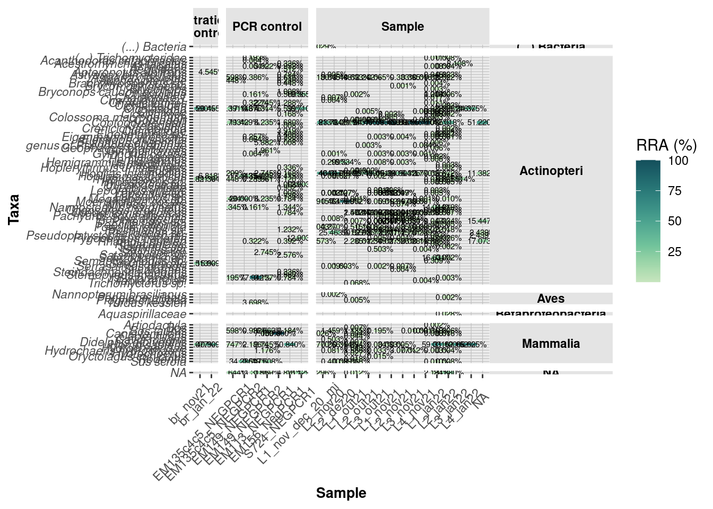
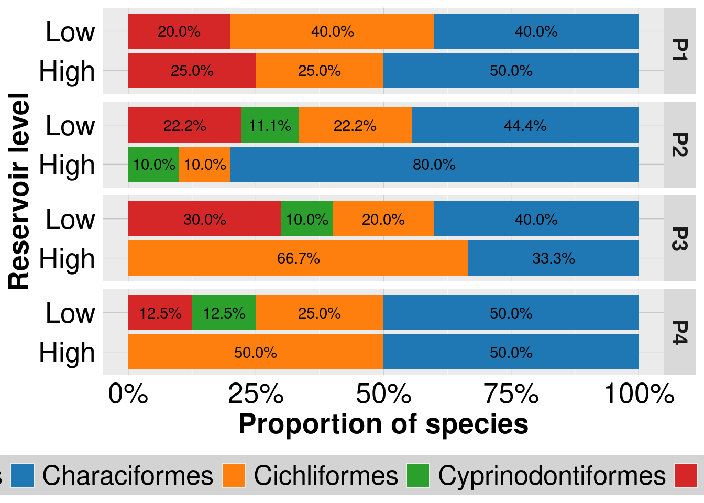
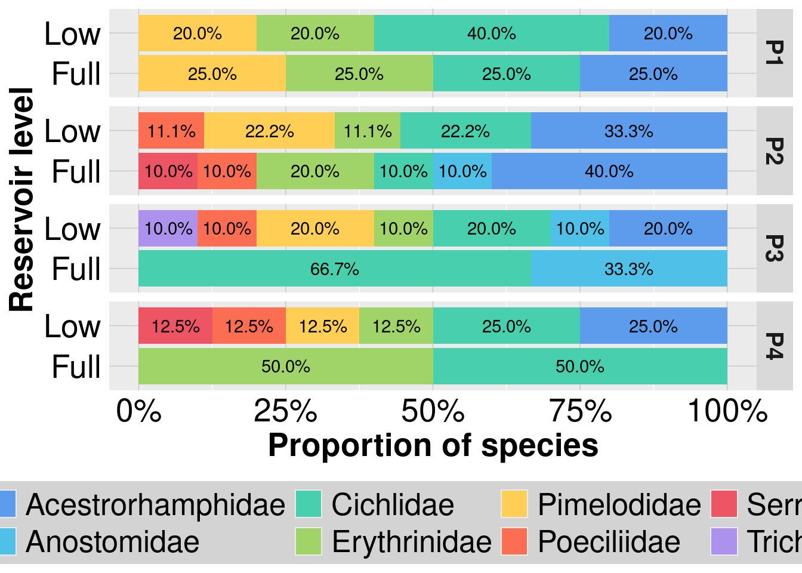
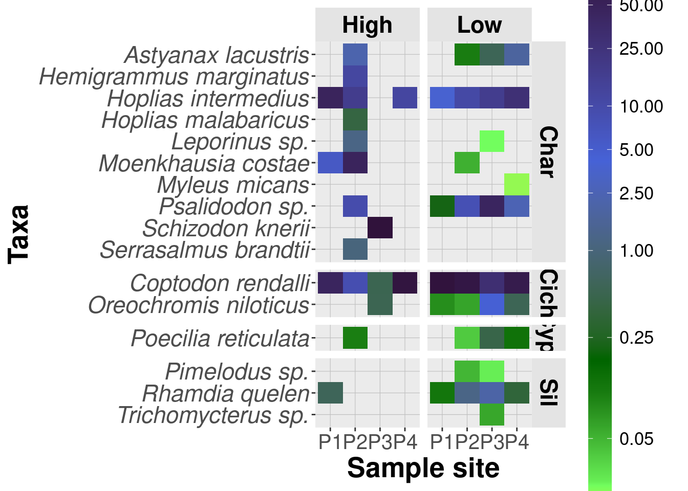
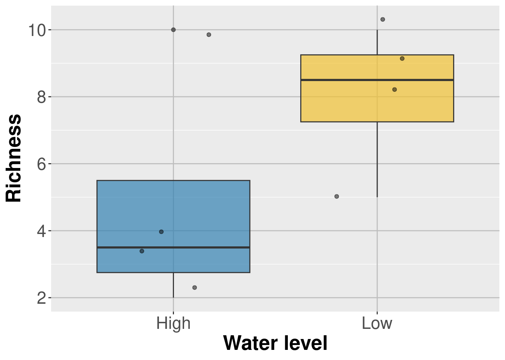
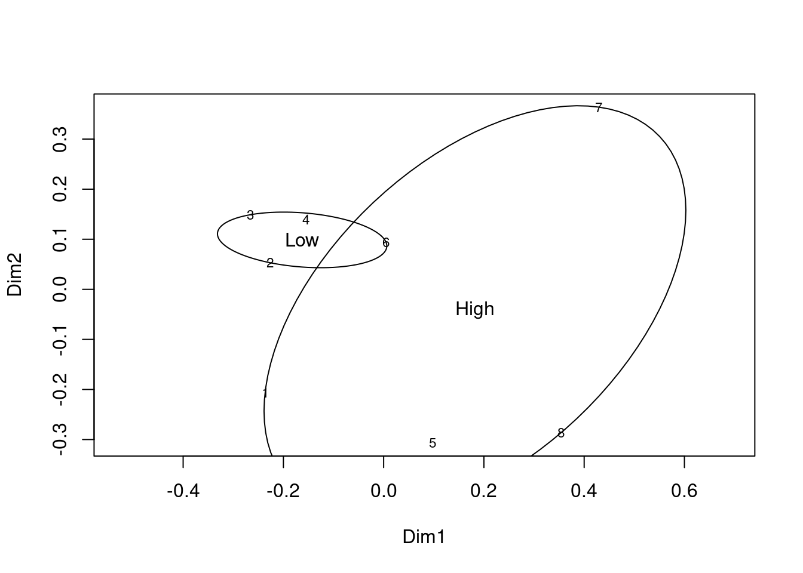
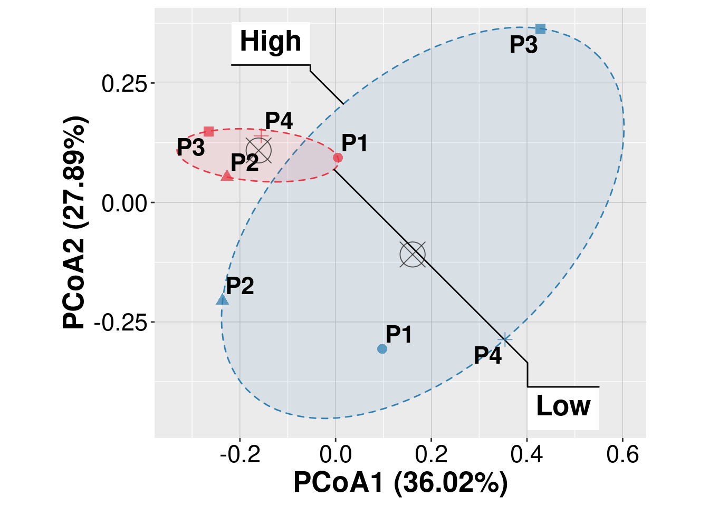
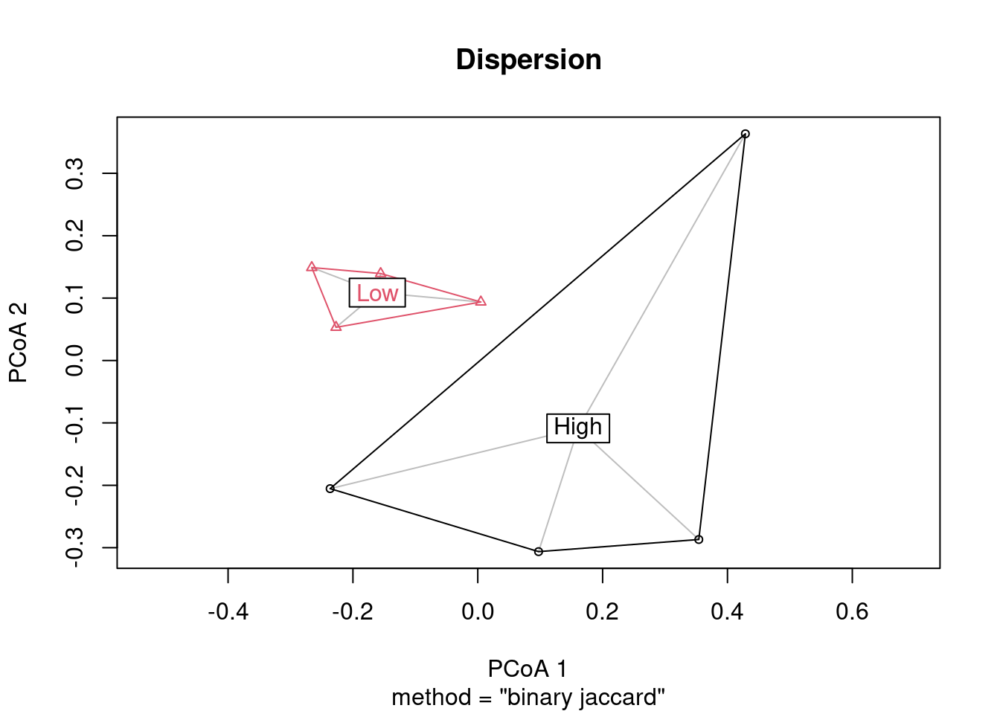
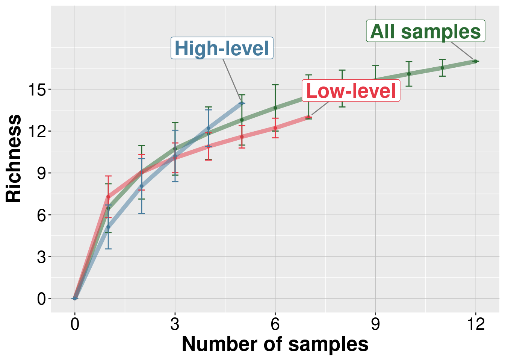

# Loading libraries
library("tidyverse")
library("Biostrings")
library("DECIPHER")
library("phyloseq")
library("vegan")
library("readxl")
library("ggpubr")
library("ggplot2")
library("ggsignif")
library("ggrepel")
library("openxlsx")
library("colorspace")Analyses of Hydrology-Induced Changes Drive Fish eDNA Ecology in a Neotropical Reservoir paper
This pipeline integrates public tools available for metabarcoding analyses from “Analyses of Hydrology-Induced Changes Drive Fish eDNA Ecology in a Neotropical Reservoir” paper. To share or reproduce this content, please require authors’ consent.
Contact: gabrielmendesbrt@gmail.com
1 Housekeeping
Load project environment and necessary libraries
Create project folders
# Creating and loading paths ---- { prjct_path <- "/home/gabriel/projetos/LI_paper" prjct_radical <- "eDNA_Lagoa-dos-Ingleses" scripts_path <- paste0(prjct_path,"/scripts") data_path <- paste0(prjct_path,"/data") results_path <- paste0(prjct_path,"/results") figs_path <- paste0(results_path,"/figures") tbl_path <- paste0(results_path,"/tables") env_path <- paste0(prjct_path,"/environment") paths <- c(scripts_path, data_path, results_path, figs_path, tbl_path, env_path) } for (dir in paths) { if (dir.exists(dir)) { print(paste("The directory", dir, "already exists!")) } else { print(paste("Making", dir, "!" )) dir.create(dir) } }[1] "The directory /home/gabriel/projetos/LI_paper/scripts already exists!" [1] "The directory /home/gabriel/projetos/LI_paper/data already exists!" [1] "The directory /home/gabriel/projetos/LI_paper/results already exists!" [1] "The directory /home/gabriel/projetos/LI_paper/results/figures already exists!" [1] "The directory /home/gabriel/projetos/LI_paper/results/tables already exists!" [1] "The directory /home/gabriel/projetos/LI_paper/environment already exists!"Data acquring
## Full results pre_raw_results_tbl <- read_excel(paste0(data_path, "/curated-Complete_analysis_results-2024-01-10.xlsx")) %>% tibble() ## Curated ASV identifications curated_ids_tbl <- read_excel( paste0(data_path, "/curated_lagoa_ingleses-ASVs_x_amostras-2024-01-09.xlsx")) %>% tibble() ## Complete BLASTn taxonomy results blast_tax <- read.csv(paste0(data_path, "/tax_blast.csv"), sep = ",", check.names = FALSE, row.names = 1)
2 Integrating raw and curated data
2.1 Obtaining data
Selecting colunms and adjusting the raw data table
pre_raw_results_tbl <- pre_raw_results_tbl %>% select("Sample", "Unique_File_name", "OTU", "Abundance", "Obs. Curadoria", "Possible contamination", "Read origin", "Primer expected length", "ASV Size (pb)", "ASV header") %>% mutate(Sample = str_replace(Sample, "__", "_"))Selecting colunms from curated identifications table
curated_ids_tbl <- curated_ids_tbl %>% select("ASV header", "ASV (Sequence)", "Curated ID", "Final ID (BLASTn)", "BLASTn pseudo-score", "Class (BLASTn)", "Curated Order (BLASTn)") %>% unique()
2.2 Data integration and Taxonomic Enrichment
Joining the results table with curated identifications
raw_results_tbl <- pre_raw_results_tbl %>% left_join(curated_ids_tbl, by = "ASV header") %>% select("ASV header","ASV (Sequence)", "Curated ID", "Final ID (BLASTn)","BLASTn pseudo-score", "Class (BLASTn)", "Curated Order (BLASTn)", "Sample", "Unique_File_name", "OTU", "Abundance", "Obs. Curadoria","Read origin", "Primer expected length", "ASV Size (pb)")Adding complete taxonomy from BLASTr output
# Prepare the BLAST taxonomy table blast_tax_less <- blast_tax %>% select(ASV,`Family (BLASTn)`) %>% dplyr::rename(`ASV (Sequence)` = ASV) %>% left_join(raw_results_tbl, by = "ASV (Sequence)") %>% mutate("Genus (BLASTn)" = str_split_fixed(string = .$`Curated ID`, pattern = " ", n = 2)[,1]) %>% select("ASV (Sequence)", "Family (BLASTn)", "Genus (BLASTn)") # Join the taxonomy to the main table raw_results_tax_tbl <- raw_results_tbl %>% left_join(blast_tax_less, by = "ASV (Sequence)") %>% select("ASV header", "ASV (Sequence)", "Curated ID", "Final ID (BLASTn)", "BLASTn pseudo-score", "Class (BLASTn)", "Family (BLASTn)", "Genus (BLASTn)", "Curated Order (BLASTn)", "Sample", "Unique_File_name", "OTU", "Abundance", "Obs. Curadoria", "Read origin", "Primer expected length", "ASV Size (pb)") %>% unique() %>% dplyr::rename("Order (BLASTn)" = `Curated Order (BLASTn)`)
2.3 Metadata integration
Finally, we create a metadata table containing information about each sample (such as location, date, and filter type) and join it with the sequencing data. This information was not included in the initial bioinformatics metabarcoding pipeline input, so it’s being explicitly incorporated at this stage.
Creating the metadata dataframe
# Vectors with information for each sample Sample <- c("L1_nov_dec_20_mi", "L2_nov20", "L2_dez20", "L1_out21", "L2_out21", "L3_out21", "L4_out21", "L1_nov21", "L2_nov21", "L3_nov21", "L4_nov21", "STX_L1_nov21", "STX_L2_nov21", "STX_L3_nov21", "STX_L4_nov21", "L1_jan22", "L2_jan22", "L3_jan22", "L4_jan22") Expedition <- c("November and December 2020", "November 2020", "December 2020", "October 2021", "October 2021", "October 2021", "October 2021", "November 2021", "November 2021", "November 2021", "November 2021", "November 2021", "November 2021", "November 2021", "November 2021", "January 2022", "January 2022", "January 2022", "January 2022") Year <- c("2020", "2020", "2020", "2021", "2021", "2021", "2021", "2021", "2021", "2021", "2021", "2021", "2021", "2021", "2021", "2022", "2022", "2022", "2022") Site <- c("P1", "P2", "P2", "P3", "P4", "P2", "P1", "P3", "P4", "P2", "P1", "P3", "P4", "P2", "P1", "P3", "P4", "P2", "P1") Filter <- c("MCE", "MCE", "MCE", "MCE", "MCE", "MCE", "MCE", "MCE", "MCE", "MCE", "MCE", "Sterivex", "Sterivex", "Sterivex", "Sterivex", "MCE", "MCE", "MCE", "MCE") Run <- c("Run2_ago21", "Run4_out21", "Run4_out21", "Run5_dez21", "Run5_dez21", "Run5_dez21", "Run5_dez21", "Run5_dez21", "Run5_dez21", "Run5_dez21", "Run5_dez21", "EM156", "EM156", "EM156", "EM156", "EM156", "EM156", "EM156", "EM156") Level <- c("High", "High", "High", "Low", "Low", "Low", "Low", "Low", "Low", "Low", "Low", "Low", "Low", "Low", "Low", "High", "High", "High", "High") # Combine vectors into a tibble metadata_tbl <- tibble(Run, Sample, Filter, Site, Expedition, Year, Level)Joining data with metadata
raw_results_full_tbl <- left_join(raw_results_tax_tbl, metadata_tbl, by = "Sample") %>% select("ASV header", "ASV (Sequence)", "Curated ID", "Obs. Curadoria", "Final ID (BLASTn)", "BLASTn pseudo-score", "Class (BLASTn)", "Family (BLASTn)","Genus (BLASTn)", "Order (BLASTn)", "Sample", "Unique_File_name", "OTU", "Abundance", "Read origin", "Primer expected length", "ASV Size (pb)", "Run", "Filter", "Site", "Expedition", "Year", "Level")
2.4 Manual corrections
Correcting taxonomic identifications after curation
# Update families for specific genera (february 10th 2025) raw_results_full_tbl <- raw_results_full_tbl %>% mutate(`Family (BLASTn)` = ifelse(`Genus (BLASTn)` %in% c("Psalidodon", "Moenkhausia", "Astyanax", "Hemigrammus", "Oligosarcus"), "Acestrorhamphidae", `Family (BLASTn)`)) %>% mutate(`Family (BLASTn)` = ifelse(`Genus (BLASTn)` %in% "Piabina", "Stevardiidae", `Family (BLASTn)`))
2.5 Data filtering
We remove reads outside the expected size range, NA identifications, potential contaminants from birds and mammals with low scores, and data from negative controls. Only data generated with MCE filter are used for downstream analyses.
curated_full_tbl <- raw_results_full_tbl %>% filter(Filter == "MCE", `Primer expected length` != "out of range", !is.na(`Curated ID`), `Curated ID` != "NA", !(`Class (BLASTn)` %in% c("Mammalia", "Aves") & `BLASTn pseudo-score` < 98), !Sample %in% c("EM113_NEGPCR1", "EM135c4c5_NEGPCR1", "EM135c4c5_NEGPCR2","EM149_NEGPCR1", "EM149_NEGPCR2", "EM156_NegPCR1", "S724_NEGPCR1", "br_jan_22", "br_nov21"), `Obs. Curadoria` != "Possible contamination") write_csv(curated_full_tbl, paste0(tbl_path, "/curated_full_tbl", "-", Sys.Date(), ".csv", sep = "")) curated_full_tbl# A tibble: 529 × 23 `ASV header` `ASV (Sequence)` `Curated ID` `Obs. Curadoria` <chr> <chr> <chr> <chr> 1 >ASV_471_167bp CACCGCGGTTATACGAGAGGCCCAAGTTGAC… Coptodon re… True detection 2 >ASV_471_167bp CACCGCGGTTATACGAGAGGCCCAAGTTGAC… Coptodon re… True detection 3 >ASV_472_167bp TTTCGCAGCTTTCGTGGGGTCGGAAATATAA… Coptodon re… True detection 4 >ASV_471_167bp CACCGCGGTTATACGAGAGGCCCAAGTTGAC… Coptodon re… True detection 5 >ASV_472_167bp TTTCGCAGCTTTCGTGGGGTCGGAAATATAA… Coptodon re… True detection 6 >ASV_472_167bp TTTCGCAGCTTTCGTGGGGTCGGAAATATAA… Coptodon re… True detection 7 >ASV_471_167bp CACCGCGGTTATACGAGAGGCCCAAGTTGAC… Coptodon re… True detection 8 >ASV_56_175bp CACCGCGGTTACACGTGAAGGCTCAAGTTGA… Moenkhausia… True detection 9 >ASV_57_175bp TTTCTCAGCTTTCGTGGATCGAGAGGTTCTA… Moenkhausia… True detection 10 >ASV_473_167bp CACCGCGGTTATACGAGAGACCCCAGTTGAT… Hoplias int… True detection # ℹ 519 more rows # ℹ 19 more variables: `Final ID (BLASTn)` <chr>, `BLASTn pseudo-score` <dbl>, # `Class (BLASTn)` <chr>, `Family (BLASTn)` <chr>, `Genus (BLASTn)` <chr>, # `Order (BLASTn)` <chr>, Sample <chr>, Unique_File_name <chr>, OTU <dbl>, # Abundance <dbl>, `Read origin` <chr>, `Primer expected length` <chr>, # `ASV Size (pb)` <dbl>, Run <chr>, Filter <chr>, Site <chr>, # Expedition <chr>, Year <chr>, Level <chr>
2.5.1 Analysis of removed data
Overview of informations about the data removed from the main dataset: reads outside the range, NA IDs, possible contaminations, non-Actinopteri IDs, etc.
# All MCE ASVs filtered from dataset filt_asvs <- setdiff(raw_results_full_tbl, curated_full_tbl) %>% as_tibble() %>% filter(!(Filter) %in% "Sterivex") %>% mutate(`Curated ID` = ifelse(`Curated ID` == "NA", NA, `Curated ID`)) # Infos about classes of ASVs filtered filt_stats_class <- filt_asvs %>% group_by(`Class (BLASTn)`) %>% reframe("Total reads" = sum(Abundance), "ASVs" = length(unique(`ASV (Sequence)`)), "OTUs" = length(unique(OTU)), "Families" = length(unique(`Family (BLASTn)`))) # Infos about fish ASVs filtered filt_stats_fish <- filt_asvs %>% filter(`Class (BLASTn)` == "Actinopteri") %>% group_by(`Curated ID`) %>% reframe("Total reads" = sum(Abundance), "ASVs" = length(unique(`ASV (Sequence)`)), "OTUs" = length(unique(OTU)), "Families" = length(unique(`Family (BLASTn)`))) # Infos about samples filtered from dataset filt_stats_sample <- filt_asvs %>% group_by(Sample) %>% reframe("Total reads" = sum(Abundance), "ASVs" = length(unique(`ASV (Sequence)`)), "OTUs" = length(unique(OTU)), "Families" = length(unique(`Family (BLASTn)`))) # Infos about Curated IDs filtered from dataset options(scipen = 999) filt_stats_IDs_all <- filt_asvs %>% group_by(`Curated ID`, `Final ID (BLASTn)`) %>% summarise("Family" =`Family (BLASTn)`, "Reads" = sum(Abundance), "Class" = paste(unique(`Class (BLASTn)`), collapse = ", "), "Samples" = paste(unique(Sample), collapse = ", "), "Reasons" = paste(unique(c( if (any(is.na(`Curated ID`))) "ID is NA", if (any(`Obs. Curadoria` %in% "Possible contamination")) "Contamination", if (any(`Primer expected length` %in% "out of range")) "Out of range", if (any((`Class (BLASTn)` != "Actinopteri" & !is.na(`Class (BLASTn)`)))) paste("Class:", `Class (BLASTn)`), if (any(str_detect(Sample, "PCR"))) "PCR control", if (any(str_detect(Sample, "^br_"))) "Extraction control" )), collapse = ", ")) %>% ungroup() %>% select(`Curated ID`, `Final ID (BLASTn)`, Reads, Samples, Reasons, Class, Family) %>% arrange(desc(Reads)) %>% unique()Warning: Returning more (or less) than 1 row per `summarise()` group was deprecated in dplyr 1.1.0. ℹ Please use `reframe()` instead. ℹ When switching from `summarise()` to `reframe()`, remember that `reframe()` always returns an ungrouped data frame and adjust accordingly.`summarise()` has grouped output by 'Curated ID', 'Final ID (BLASTn)'. You can override using the `.groups` argument.
2.5.2 Table S4
Table of removed taxonomic identifications. Each row corresponds to one taxon in a given sample and summarizes the information that led to its exclusion from the final dataset. Columns include the taxonomic class (Class), family (Family), taxon name (Taxa), number of reads (Reads), relative read abundance (% RRA), and the sample of origin (Sample). Since different ASVs can be grouped under the same taxon within a sample, the ‘Reason’ column specifies why that taxon was removed (e.g., detected in controls – Contamination or PCR control/Filtration control; amplicon length outside the expected range – Out of range; unidentified ASVs – ID is NA; or belonging to a non-Actinopterygii class such as Mammalia or Aves).
# Infos about IDs and samples # Retriving total sample abundances sample_abd <- raw_results_full_tbl %>% filter(!(Filter) %in% "Sterivex") %>% group_by(Sample) %>% summarize(total_abundance = sum(Abundance, na.rm = TRUE)) filt_stats_IDs_samples <- filt_asvs %>% group_by(`Curated ID`, `Final ID (BLASTn)`, Sample) %>% summarise("Family" =`Family (BLASTn)`, "Reads" = sum(Abundance), "Class" = paste(unique(`Class (BLASTn)`), collapse = ", "), "Reasons" = paste(unique(c( if (any(is.na(`Curated ID`))) "ID is NA", if (any(`Obs. Curadoria` %in% "Possible contamination")) "Contamination", if (any(`Primer expected length` %in% "out of range")) "Out of range", if (any((`Class (BLASTn)` != "Actinopteri" & !is.na(`Class (BLASTn)`)))) paste("Class:", `Class (BLASTn)`), if (any(str_detect(Sample, "PCR"))) "PCR control", if (any(str_detect(Sample, "^br_"))) "Extraction control" )), collapse = ", ")) %>% ungroup() %>% left_join(sample_abd, by = "Sample") %>% mutate("RRA %" = round(Reads / total_abundance * 100, digits = 3)) %>% select(`Curated ID`, `Final ID (BLASTn)`, Reads, `RRA %`, Sample, Reasons, Class, Family) %>% arrange(desc(`RRA %`)) %>% unique()Warning: Returning more (or less) than 1 row per `summarise()` group was deprecated in dplyr 1.1.0. ℹ Please use `reframe()` instead. ℹ When switching from `summarise()` to `reframe()`, remember that `reframe()` always returns an ungrouped data frame and adjust accordingly.`summarise()` has grouped output by 'Curated ID', 'Final ID (BLASTn)', 'Sample'. You can override using the `.groups` argument.# Exporting table for the paper write.csv(filt_stats_IDs_samples, paste0(tbl_path, "/filt_stats_summary", "-", Sys.Date(), ".csv", sep = "")) filt_stats_IDs_samples# A tibble: 397 × 8 `Curated ID` `Final ID (BLASTn)` Reads `RRA %` Sample Reasons Class Family <chr> <chr> <dbl> <dbl> <chr> <chr> <chr> <chr> 1 Canis familia… Canis lupus famili… 1 100 EM113… "Class… Mamm… Canid… 2 Coptodon rend… Tilapia rendalli 494025 95.8 L4_no… "" Acti… Cichl… 3 Coptodon rend… Tilapia rendalli 43716 88.1 L3_no… "" Acti… Cichl… 4 Synbranchus Synbranchus sp. 2424 77.9 EM149… "Conta… Acti… Synbr… 5 Coptodon rend… Tilapia rendalli 288365 77.7 L3_ou… "" Acti… Cichl… 6 Moenkhausia c… Moenkhausia costae 263677 73.8 L2_de… "Out o… Acti… Acest… 7 Coptodon rend… Tilapia rendalli 47443 71.4 L1_no… "" Acti… Cichl… 8 Coptodon rend… Tilapia rendalli 127099 69 L2_no… "Out o… Acti… Cichl… 9 Homo sapiens Homo sapiens 21 65.6 L4_ja… "Class… Mamm… Homin… 10 Coptodon rend… Tilapia rendalli 342215 64.5 L2_ou… "" Acti… Cichl… # ℹ 387 more rows
2.5.3 Figure S2
Tile plot of removed sequences. The plot illustrates the taxonomic composition of sequences removed during the filtering process. The X-axis represents samples, grouped by category (filtration control, PCR control, and environmental sample), and the Y-axis shows the taxonomic identifications of sequences excluded from the final dataset. Sequences detected in controls were discarded, as well as those not meeting quality or taxonomic filtering criteria (e.g., unidentified, out-of-range amplicon length, non-Actinopterygii, or potential contaminations).
# Sample levels for plot sample_levels <- c("br_nov21", "br_jan_22", "EM135c4c5_NEGPCR1", "EM135c4c5_NEGPCR2", "EM149_NEGPCR1", "EM149_NEGPCR2", "EM113_NEGPCR1", "EM156_NegPCR1", "S724_NEGPCR1", "L1_nov_dec_20_mi", "L2_nov20", "L2_dez20", "L1_out21", "L2_out21", "L3_out21", "L1_nov21", "L2_nov21", "L3_nov21", "L4_nov21", "L1_jan22", "L2_jan22", "L3_jan22", "L4_jan22") # Sample types for plot sample_types <- c("Filtering control, Filtering control") # Curated ID levels id_levels <- filt_stats_IDs_samples$`Curated ID` %>% unique() %>% sort() # Plotting filtered_plot <- filt_stats_IDs_samples %>% mutate(Sample = factor(Sample, levels = sample_levels)) %>% mutate(Class = ifelse(Class == "class of subphylum of phylum of kingdom of Bacteria", "(...) Bacteria", Class)) %>% mutate(`Curated ID` = ifelse(`Curated ID` == "order of subclass of class of subphylum of phylum of kingdom of Bacteria", "(...) Bacteria", `Curated ID`)) %>% mutate(Family = ifelse(Family == "family of suborder of order of subclass of class of subphylum of phylum of kingdom of Bacteria", "(...) Bacteria", Family)) %>% mutate(`Curated ID` = ifelse(`Curated ID` == "genus of subfamily of Trichomycteridae", "(...) Trichomycteridae", `Curated ID`)) %>% mutate(sample_type = case_when(str_detect(Sample, "^br_") ~ "Filtration\n control", str_detect(Sample, "PCR") ~ "PCR control", TRUE ~ "Sample")) %>% mutate(`Curated ID`= factor(`Curated ID`, levels = rev(sort(unique(`Curated ID`))))) %>% ggplot(aes(Sample, `Curated ID`, fill = `RRA %`)) + geom_tile() + facet_grid(cols = vars(sample_type), rows = c(vars(Class) # vars(Family)), ), space = "free", scales = "free", drop = TRUE) + geom_text(aes(label = sprintf("%.3f%%", `RRA %`)), color = "black", size = 2) + scale_fill_continuous_sequential("BluGrn") + theme(panel.grid.major = element_line( color = "grey", linewidth = 0.2, linetype = 1), strip.background = element_rect(fill = "#e4e4e4"), strip.text = element_text(size = 8.5, face = "bold", color = "black"), axis.text.y = element_text(size = 8.5, face = "italic"), axis.title = element_text(size = 10, face = "bold"), axis.text.x = element_text(angle = 45, hjust = 0.85, vjust = 0.85), strip.text.y = element_text(angle = 0)) + labs(fill = 'RRA (%)', x = "Sample", y = "Taxa") # Exporting plot for the paper ggsave(plot = filtered_plot, filename = paste0(figs_path, "/filtered_plot", "-", Sys.Date(), ".pdf", sep = ""), units = "cm", height = 35.5, # width = 30.5, width = 35.5, dpi = 600) filtered_plot
3 Preliminary tables
Creating a table to evaluate the raw data after pipeline processing
raw_resume <- raw_results_full_tbl %>% group_by(Sample) %>% mutate("Abd total" = sum(Abundance)) %>% ungroup() %>% group_by(`Curated ID`) %>% mutate("Abundancia total" = sum(Abundance)) %>% ungroup %>% group_by(`Final ID (BLASTn)`) %>% mutate("Reads totais" = sum(Abundance)) %>% ungroup() %>% group_by(Sample) %>% mutate("RRA by sample" = (Abundance/`Abd total`)*100) %>% reframe( "Total reads" = `Reads totais`, "Total abundance" = `Abundancia total`, "RRA" = sum(`RRA by sample`), "ASVs" = length(unique(`ASV header`)), "OTUs" = length(unique(OTU)), "Reads" = sum(Abundance), "Class" = `Class (BLASTn)`, "Order" = `Order (BLASTn)`, "Family" = `Family (BLASTn)`, "Genus" = `Genus (BLASTn)`, "Curated ID" = `Curated ID`) %>% unique()
3.1 Table S2
Integrative curation summary of Amplicon Sequence Variants (ASVs) before class- and abundance-based filtering. The table lists all ASVs with their corresponding taxonomic classifications and read abundances (raw counts) prior to curation. Post-filtering, a refined subset of these ASVs was used for downstream analyses (see Methods).
# Creating a table to use to evaluate the unfiltered data # 1st Longer table dt_all_resume <- curated_full_tbl %>% group_by(Level, Site, Filter, Year) %>% mutate("Abd total" = sum(Abundance)) %>% ungroup() %>% group_by(`Curated ID`) %>% mutate("Abundancia total" = sum(Abundance)) %>% ungroup %>% group_by(`Final ID (BLASTn)`) %>% mutate("Reads totais" = sum(Abundance)) %>% ungroup() %>% group_by(`Curated ID`, `Final ID (BLASTn)`, `Site`, `Level`, `Filter`, `Year`) %>% mutate("RRA no periodo" = (Abundance/`Abd total`)*100) %>% reframe("Total reads" = `Reads totais`, "Total abundance" = `Abundancia total`, "RRA" = sum(`RRA no periodo`), "ASVs" = length(unique(`ASV header`)), "OTUs" = length(unique(OTU)), "Reads" = sum(Abundance), "Class" = `Class (BLASTn)`, "Order" = `Order (BLASTn)`, "Family" = `Family (BLASTn)`, "Genus" = `Genus (BLASTn)`) %>% unique() # Testing if RRA was calculated right dt_all_resume %>% group_by( `Site`, `Level`, `Filter`, `Year`) %>% summarise(total_RRA = sum(RRA, na.rm = TRUE)) %>% ungroup()`summarise()` has grouped output by 'Site', 'Level', 'Filter'. You can override using the `.groups` argument.# A tibble: 10 × 5 Site Level Filter Year total_RRA <chr> <chr> <chr> <chr> <dbl> 1 P1 High MCE 2020 100 2 P1 High MCE 2022 100 3 P1 Low MCE 2021 100 4 P2 High MCE 2020 100 5 P2 High MCE 2022 100 6 P2 Low MCE 2021 100 7 P3 High MCE 2022 100 8 P3 Low MCE 2021 100 9 P4 High MCE 2022 100 10 P4 Low MCE 2021 100# Wider table to evaluate unfiltered data wider_dt_all_resume <- dt_all_resume %>% mutate(RRA = round(RRA,digits = 4)) %>% ungroup() %>% unite(Site, Level, Year, Filter, col= "Site_Level_Year") %>% pivot_wider(id_cols = c("Class","Curated ID", "Final ID (BLASTn)", "Total reads", "Total abundance"), # names_from = Site_Level_Year_Filter, names_from = Site_Level_Year, values_from = c("RRA","ASVs","OTUs","Reads"), names_glue = "{Site_Level_Year}_{.value}") %>% select(sort(colnames(.))) %>% relocate("Class","Curated ID","Final ID (BLASTn)","Total reads", "Total abundance", #2020 MCE "P1_High_2020_MCE_Reads", "P1_High_2020_MCE_ASVs", "P1_High_2020_MCE_OTUs", "P1_High_2020_MCE_RRA", "P2_High_2020_MCE_Reads", "P2_High_2020_MCE_ASVs", "P2_High_2020_MCE_OTUs", "P2_High_2020_MCE_RRA", #2021 MCE "P1_Low_2021_MCE_Reads", "P1_Low_2021_MCE_ASVs", "P1_Low_2021_MCE_OTUs", "P1_Low_2021_MCE_RRA", "P2_Low_2021_MCE_Reads", "P2_Low_2021_MCE_ASVs", "P2_Low_2021_MCE_OTUs", "P2_Low_2021_MCE_RRA", "P3_Low_2021_MCE_Reads", "P3_Low_2021_MCE_ASVs", "P3_Low_2021_MCE_OTUs", "P3_Low_2021_MCE_RRA", "P4_Low_2021_MCE_Reads", "P4_Low_2021_MCE_ASVs", "P4_Low_2021_MCE_OTUs", "P4_Low_2021_MCE_RRA", #2022 MCE "P1_High_2022_MCE_Reads", "P1_High_2022_MCE_ASVs", "P1_High_2022_MCE_OTUs", "P1_High_2022_MCE_RRA", "P2_High_2022_MCE_Reads", "P2_High_2022_MCE_ASVs", "P2_High_2022_MCE_OTUs", "P2_High_2022_MCE_RRA", "P3_High_2022_MCE_Reads", "P3_High_2022_MCE_ASVs", "P3_High_2022_MCE_OTUs", "P3_High_2022_MCE_RRA", "P4_High_2022_MCE_Reads", "P4_High_2022_MCE_ASVs", "P4_High_2022_MCE_OTUs", "P4_High_2022_MCE_RRA") # Exporting table for the paper write.csv(wider_dt_all_resume, paste0(tbl_path, "/wider_dt_all_resume", "-", Sys.Date(), ".csv", sep = "")) wider_dt_all_resume# A tibble: 62 × 45 Class `Curated ID` `Final ID (BLASTn)` `Total reads` `Total abundance` <chr> <chr> <chr> <dbl> <dbl> 1 Actinopteri Astyanax bim… Astyanax bimaculat… 153 153 2 Actinopteri Astyanax lac… Astyanax lacustris 28025 28025 3 Mammalia Bos taurus Bos taurus 8168 8168 4 Mammalia Canis famili… Canis lupus famili… 76 76 5 Mammalia Capra hircus Capra hircus 168 168 6 Mammalia Cavia magna Cavia magna 1043 1043 7 Actinopteri Characidae 1 Planaltina myersi 32 32 8 Actinopteri Characidium … Characidium sp. 8 8 9 Actinopteri Colossoma ma… Piaractus brachypo… 9 9 10 Actinopteri Coptodon ren… Coptodon zillii 34 1600284 # ℹ 52 more rows # ℹ 40 more variables: P1_High_2020_MCE_Reads <dbl>, # P1_High_2020_MCE_ASVs <int>, P1_High_2020_MCE_OTUs <int>, # P1_High_2020_MCE_RRA <dbl>, P2_High_2020_MCE_Reads <dbl>, # P2_High_2020_MCE_ASVs <int>, P2_High_2020_MCE_OTUs <int>, # P2_High_2020_MCE_RRA <dbl>, P1_Low_2021_MCE_Reads <dbl>, # P1_Low_2021_MCE_ASVs <int>, P1_Low_2021_MCE_OTUs <int>, …
3.2 Table S5
Table S5. Post-curation and filtering results for retained species. This table presents the total read abundance per species across all samples (Total abundance), absolute number of reads per species at each sampling point and campaign (Reads), number of ASVs (ASVs) and OTUs (OTUs) assigned to each species, and Relative Read Abundance (RRA). This table reflects the final dataset used for statistical and ecological analyses after integrative curation (see Methods).
# Creating the table with data to be used in analysis # Filtered data, only Actinopteri and reads >=100 filt_tbl <- curated_full_tbl %>% filter(`Class (BLASTn)` %in% "Actinopteri", !`Curated ID` %in% c("Salmo salar")) %>% group_by(`Curated ID`, Site, Level, Filter, Year) %>% mutate(Reads = sum(Abundance)) %>% filter(Reads >= 100) %>% ungroup() # Filtered and grouped data by Samples grouped_sampled_filt_tbl <- curated_full_tbl %>% filter(`Class (BLASTn)` %in% "Actinopteri", !`Curated ID` %in% c("Salmo salar")) %>% group_by(`Curated ID`, Sample) %>% mutate(Reads = sum(Abundance)) %>% filter(Reads >= 100) %>% ungroup() %>% # creating total abundance by sample group_by(Sample) %>% mutate("Abd total" = sum(Abundance)) %>% ungroup() %>% # calculating RRA by Sample group_by(`Curated ID`, Sample) %>% mutate("RRA na amostra" = (Abundance/`Abd total`*100)) %>% summarize("Site" = dplyr::first(Site), "Year" = dplyr::first(Year), "Expedition" = dplyr::first(Expedition), "Level" = dplyr::first(Level), "Filter" = dplyr::first(Filter), "Class" = dplyr::first(`Class (BLASTn)`), "Order" = dplyr::first(`Order (BLASTn)`), "Family" = dplyr::first(`Family (BLASTn)`), "Genus" = dplyr::first(`Genus (BLASTn)`), "Reads" = sum(Abundance), "Sample abundance" = dplyr::first(`Abd total`), "RRA" = sum(`RRA na amostra`), "ASVs" = length(unique(`ASV header`)), "OTUs" = length(unique(OTU)))`summarise()` has grouped output by 'Curated ID'. You can override using the `.groups` argument.# Is RRA correct? grouped_sampled_filt_tbl %>% group_by(Sample) %>% summarise(total_RRA = sum(RRA, na.rm = TRUE)) %>% ungroup()# A tibble: 12 × 2 Sample total_RRA <chr> <dbl> 1 L1_jan22 100 2 L1_nov21 100 3 L1_nov_dec_20_mi 100 4 L1_out21 100 5 L2_dez20 100 6 L2_jan22 100 7 L2_nov20 100 8 L2_nov21 100 9 L2_out21 100 10 L3_nov21 100 11 L3_out21 100 12 L4_nov21 100# Filtered and grouped data by Year, Site and Filter # A tabela wider precisa dessas informacoes separadamente grouped_filt_tbl <- filt_tbl %>% # creating total abundance by period group_by(Level, Site, Filter, Year) %>% mutate("Abd total" = sum(Abundance)) %>% ungroup() %>% # creating total abundance by Curated ID group_by(`Curated ID`) %>% mutate("Abundancia total" = sum(Abundance)) %>% ungroup() %>% # calculating RRA by period group_by(`Curated ID`, Site, Level, Filter, Year) %>% mutate("RRA no periodo" = (Abundance/`Abd total`)*100) %>% reframe("Curated ID" = `Curated ID`, "Class" = `Class (BLASTn)`, "Order" = `Order (BLASTn)`, "Family" = `Family (BLASTn)`, "Genus" = `Genus (BLASTn)`, "Reads" = sum(Abundance), "Period abundance" = `Abd total`, "Total abundance" = `Abundancia total`, "RRA" = sum(`RRA no periodo`), "ASVs" = length(unique(`ASV header`)), "OTUs" = length(unique(OTU))) %>% unique() # Is RRA correct? grouped_filt_tbl %>% group_by(Site, Level, Filter, Year) %>% summarise(total_RRA = sum(RRA, na.rm = TRUE)) %>% ungroup()`summarise()` has grouped output by 'Site', 'Level', 'Filter'. You can override using the `.groups` argument.# A tibble: 8 × 5 Site Level Filter Year total_RRA <chr> <chr> <chr> <chr> <dbl> 1 P1 High MCE 2020 100 2 P1 Low MCE 2021 100 3 P2 High MCE 2020 100 4 P2 Low MCE 2021 100 5 P3 High MCE 2022 100 6 P3 Low MCE 2021 100 7 P4 High MCE 2022 100 8 P4 Low MCE 2021 100# Tabela wider com os dados filtrados wider_filt_tbl <- grouped_filt_tbl %>% mutate(RRA = round(RRA,digits = 4)) %>% ungroup() %>% unite(Site, Level, Year, col= "Site_Level_Year") %>% pivot_wider(id_cols = c("Curated ID", "Total abundance"), names_from = Site_Level_Year, values_from = c("RRA","ASVs","OTUs","Reads"), names_glue = "{Site_Level_Year}_{.value}") %>% select(sort(colnames(.))) %>% relocate("Curated ID", "Total abundance", #2020 MCE "P1_High_2020_Reads", "P1_High_2020_ASVs", "P1_High_2020_OTUs", "P1_High_2020_RRA", "P2_High_2020_Reads", "P2_High_2020_ASVs", "P2_High_2020_OTUs", "P2_High_2020_RRA", #2021 MCE "P1_Low_2021_Reads", "P1_Low_2021_ASVs", "P1_Low_2021_OTUs", "P1_Low_2021_RRA", "P2_Low_2021_Reads", "P2_Low_2021_ASVs", "P2_Low_2021_OTUs", "P2_Low_2021_RRA", "P3_Low_2021_Reads", "P3_Low_2021_ASVs", "P3_Low_2021_OTUs", "P3_Low_2021_RRA", "P4_Low_2021_Reads", "P4_Low_2021_ASVs", "P4_Low_2021_OTUs", "P4_Low_2021_RRA", #2022 MCE "P3_High_2022_Reads", "P3_High_2022_ASVs", "P3_High_2022_OTUs", "P3_High_2022_RRA", "P4_High_2022_Reads", "P4_High_2022_ASVs", "P4_High_2022_OTUs", "P4_High_2022_RRA") # Exporting table for the paper write.csv(wider_filt_tbl, paste0(tbl_path, "/wider_dt_filt", "-", Sys.Date(), ".csv", sep = "")) wider_filt_tbl# A tibble: 16 × 34 `Curated ID` `Total abundance` P1_High_2020_Reads P1_High_2020_ASVs <chr> <dbl> <dbl> <int> 1 Astyanax lacustris 27792 NA NA 2 Coptodon rendalli 1600284 18615 2 3 Hemigrammus marginatus 66126 NA NA 4 Hoplias intermedius 473065 19691 1 5 Hoplias malabaricus 2256 NA NA 6 Leporinus sp. 6666 NA NA 7 Moenkhausia costae 267296 2457 1 8 Myleus micans 137 NA NA 9 Oreochromis niloticus 24430 NA NA 10 Pimelodus sp. 318 NA NA 11 Poecilia reticulata 3616 NA NA 12 Psalidodon sp. 304379 NA NA 13 Rhamdia quelen 17175 238 1 14 Schizodon knerii 31426 NA NA 15 Serrasalmus brandtii 5745 NA NA 16 Trichomycterus sp. 262 NA NA # ℹ 30 more variables: P1_High_2020_OTUs <int>, P1_High_2020_RRA <dbl>, # P2_High_2020_Reads <dbl>, P2_High_2020_ASVs <int>, P2_High_2020_OTUs <int>, # P2_High_2020_RRA <dbl>, P1_Low_2021_Reads <dbl>, P1_Low_2021_ASVs <int>, # P1_Low_2021_OTUs <int>, P1_Low_2021_RRA <dbl>, P2_Low_2021_Reads <dbl>, # P2_Low_2021_ASVs <int>, P2_Low_2021_OTUs <int>, P2_Low_2021_RRA <dbl>, # P3_Low_2021_Reads <dbl>, P3_Low_2021_ASVs <int>, P3_Low_2021_OTUs <int>, # P3_Low_2021_RRA <dbl>, P4_Low_2021_Reads <dbl>, P4_Low_2021_ASVs <int>, …
4 Initial data assesment
4.1 Number of Reads by sample after sequencing
options(scipen = 999)
seq_read_counts <-
read_excel("/home/gabriel/projetos/old/peixes-eDNA/analises/dez_23/runs_2_4_5_EM156/results/LI-reads_and_seqs_counts2024-01-08.xlsx") %>%
tibble() %>%
# only MCE samples
filter(Sample %in% c("L1_nov_dec_20_mi", "L2_nov20",
"L2_dez20", "L1_out21", "L2_out21",
"L3_out21", "L4_out21", "L1_nov21",
"L2_nov21", "L3_nov21", "L1_jan22",
"L2_jan22", "L3_jan22", "L4_jan22",
"br_jan_22","EM113_NEGPCR1",
"EM135c4c5_NEGPCR1",
"EM135c4c5_NEGPCR2",
"EM149_NEGPCR1","EM149_NEGPCR2",
"EM156_NegPCR1", "S724_NEGPCR1")) %>%
summarise("Total reads" = sum(`Raw reads (pairs)`))
seq_read_counts# A tibble: 1 × 1
`Total reads`
<dbl>
1 32955244.2 Number of reads after post-pipeline and filtering
- This section computes the total read count per sample that remained after data processing and filtering. This final, high-quality dataset was used for all downstream analyses. The filtering criteria included: exclusion of NA values, restriction to the Actinopteri group, and a minimum threshold of 100 reads per curated taxonomic ID
filt_raw_reads <-
grouped_sampled_filt_tbl %>%
# group_by(`Curated ID`) %>% # grouped_filt_tbl
group_by(Sample) %>% # grouped_filt_tbl
summarise(total_abd_filt = sum(Reads))
sum(filt_raw_reads$total_abd_filt)[1] 28303384.3 IDs metrics pre-pipeline and filtering
# Total reads in ASVs, OTUs, Orders, Families, Genus, Species and Nspecies for raw data
raw_stats <-
raw_resume %>%
group_by(Class) %>%
reframe(
"Total reads" = sum(Reads),
"ASVs" = sum(ASVs),
"OTUs" = sum(OTUs),
"Orders" = length(unique(Order)),
"Families" = length(unique(Family)),
"Genera" = length(unique(Genus)),
"Species" = length(unique(`Curated ID`[grepl("^[A-Za-z]+\\s[A-Za-z]+$", `Curated ID`) & !grepl("sp\\.", `Curated ID`)])),
"Nspecies" = length(unique(`Curated ID`)) - Species
) %>%
unique()4.4 IDs metrics post-pipeline and filtering
grouped_filt_stats <-
grouped_filt_tbl %>%
group_by(Class) %>% # Grouped by Class
# group_by(Order) %>% # Grouped by Order
# group_by(Family) %>% # Grouped by Family
# group_by(Genus) %>% # Grouped by Genus
# group_by(`Curated ID`) %>% # Grouped by Species
reframe(
"Total reads" = sum(Reads),
"ASVs" = sum(ASVs),
"OTUs" = sum(OTUs),
"Orders" = length(unique(`Order`)),
"Families" = length(unique(`Family`)),
"Genera" = length(unique(`Genus`)),
"Species" = length(unique(`Curated ID`[grepl("^[A-Za-z]+\\s[A-Za-z]+$", `Curated ID`) & !grepl("sp\\.", `Curated ID`)])),
"Nspecies" = length(unique(`Curated ID`)) - Species
) %>%
unique()4.5 Table S6
Table S6. Observed alpha-diversity values per sampling site and mean diversity per water-level period. Observed alpha-diversity values per sampling site and mean diversity per water-level period. Alpha-diversity (Observed index) across sampling sites, showing raw values for each location and mean diversity per water-level period. The Observed index represents the total number of distinct species detected in each sample.
# Mean and SD of alpha-diversity grouped_filt_site <- grouped_filt_tbl %>% group_by(Level, Site) %>% mutate( "Diversity" = length(unique(`Curated ID`))) %>% ungroup() %>% select(Level, Site, Diversity) %>% unique() %>% group_by(Level) %>% mutate( "Mean" = mean(Diversity), "SD" = sd(Diversity)) # Exporting table for the paper write.csv(grouped_filt_site, paste0(tbl_path, "/grouped_filt_site", "-", Sys.Date(), ".csv", sep = "")) grouped_filt_site# A tibble: 8 × 5 # Groups: Level [2] Level Site Diversity Mean SD <chr> <chr> <int> <dbl> <dbl> 1 High P2 10 4.75 3.59 2 Low P2 9 8 2.16 3 Low P3 10 8 2.16 4 Low P4 8 8 2.16 5 High P1 4 4.75 3.59 6 Low P1 5 8 2.16 7 High P3 3 4.75 3.59 8 High P4 2 4.75 3.59
5 Exploratory data assesment
5.1 Track the evolution of read counts
# Track the evolution of read counts for each sample across filtering steps
raw_results_reads <-
raw_results_tbl %>% group_by(Sample) %>%
summarise(`Raw reads` = sum(Abundance))
pre_filt_reads <-
curated_full_tbl %>%
group_by(Sample)
filt_reads <-
filt_tbl %>%
group_by(Sample) %>%
summarise(`Filt reads` = sum(Abundance))
evol_reads <-
raw_results_reads %>%
left_join(pre_filt_reads, by = "Sample") %>%
left_join(filt_reads, by = "Sample") %>%
group_by(`Raw reads`, `Filt reads`) %>%
select(Sample, `Raw reads`, `Filt reads`) %>%
unique()5.2 Listing identifications outside the species level
# Identify ASVs that were not identified to the species level (genus + epithet)
spp_level <-
grouped_filt_tbl %>%
reframe("Species" = unique(`Curated ID`[grepl("^[A-Za-z]+\\s[A-Za-z]+$", `Curated ID`) &
!grepl("sp\\.", `Curated ID`)]))
nspp_level <-
grouped_filt_tbl %>%
reframe("Nspecies" = setdiff(unique(`Curated ID`), spp_level$Species))5.3 Table 2
Table 2. Taxa detected by eDNA metabarcoding. Taxa detection after integrative curation, showing taxonomic assignment and corresponding absolute read abundance, ASVs, and OTUs.
# Group final filtered data by curated taxonomic identification id_level <- grouped_filt_tbl %>% group_by(`Curated ID`) %>% reframe("Order" = Order, "Family" = Family, "Genus" = Genus, "Curated identification" = `Curated ID`, "Reads" = sum(Reads), "ASVs" = sum(ASVs), "OTUs" = sum(OTUs)) %>% unique() %>% select("Order", "Family", "Genus", "Curated identification", "Reads", "ASVs","OTUs") # Exporting table for the paper write.csv(id_level, paste0(tbl_path, "/id_level_tbl", "-", Sys.Date(), ".csv", sep = "")) id_level# A tibble: 16 × 7 Order Family Genus Curated identificati…¹ Reads ASVs OTUs <chr> <chr> <chr> <chr> <dbl> <int> <int> 1 Characiformes Acestrorh… Asty… Astyanax lacustris 2.78e4 16 14 2 Cichliformes Cichlidae Copt… Coptodon rendalli 1.60e6 74 20 3 Characiformes Acestrorh… Hemi… Hemigrammus marginatus 6.61e4 6 2 4 Characiformes Erythrini… Hopl… Hoplias intermedius 4.73e5 31 15 5 Characiformes Erythrini… Hopl… Hoplias malabaricus 2.26e3 2 2 6 Characiformes Anostomid… Lepo… Leporinus sp. 6.67e3 13 11 7 Characiformes Acestrorh… Moen… Moenkhausia costae 2.67e5 28 5 8 Characiformes Serrasalm… Myle… Myleus micans 1.37e2 2 2 9 Cichliformes Cichlidae Oreo… Oreochromis niloticus 2.44e4 20 18 10 Siluriformes Pimelodid… Pime… Pimelodus sp. 3.18e2 13 12 11 Cyprinodontiformes Poeciliid… Poec… Poecilia reticulata 3.62e3 8 8 12 Characiformes Acestrorh… Psal… Psalidodon sp. 3.04e5 33 13 13 Siluriformes Pimelodid… Rham… Rhamdia quelen 1.72e4 11 11 14 Characiformes Anostomid… Schi… Schizodon knerii 3.14e4 10 2 15 Characiformes Serrasalm… Serr… Serrasalmus brandtii 5.75e3 2 2 16 Siluriformes Trichomyc… Tric… Trichomycterus sp. 2.62e2 2 2 # ℹ abbreviated name: ¹`Curated identification`
5.4 Summarizing final data by class
# Summarize final data at the Class level
class_Level <-
grouped_filt_tbl %>%
reframe(
"Total reads" = sum(Reads),
"ASVs" = sum(ASVs),
"OTUs" = sum(OTUs),
"Orders" = length(unique(Order)),
"Families" = length(unique(Family)),
"Genera" = length(unique(Genus)),
"Identifications" = length(unique(`Curated ID`)),
"Species" = length(unique(`Curated ID`[grepl("^[A-Za-z]+\\s[A-Za-z]+$", `Curated ID`) &
!grepl("sp\\.", `Curated ID`)])),
"Nspecies" = length(unique(`Curated ID`)) - Species) 5.5 Table S3
Table S3. Taxonomic resolution across orders. Post-curation taxonomic summary for each order, including total read abundance, number of ASVs and OTUs, and counts of assigned families, genera, and species.
# Summarize final data at the Order level order_level <- grouped_filt_tbl %>% filter(Filter %in% "MCE") %>% group_by(Order) %>% reframe( "Order" = Order, "Total reads" = sum(Reads), "ASVs" = sum(ASVs), "OTUs" = sum(OTUs), "Families" = length(unique(Family)), "Genera" = length(unique(Genus)), "Identifications" = length(unique(`Curated ID`)), "Species" = length(unique(`Curated ID`[grepl("^[A-Za-z]+\\s[A-Za-z]+$", `Curated ID`) & !grepl("sp\\.", `Curated ID`)])), "Nspecies" = length(unique(`Curated ID`)) - Species ) %>% unique() # Exporting table for the paper write.csv(order_level, paste0(tbl_path, "/order_level_tbl", "-", Sys.Date(), ".csv", sep = "")) order_level# A tibble: 4 × 9 Order `Total reads` ASVs OTUs Families Genera Identifications Species <chr> <dbl> <int> <int> <int> <int> <int> <int> 1 Characiform… 1184888 143 68 4 9 10 8 2 Cichliformes 1624714 94 38 1 2 2 2 3 Cyprinodont… 3616 8 8 1 1 1 1 4 Siluriformes 17755 26 25 2 3 3 1 # ℹ 1 more variable: Nspecies <int>
5.6 Summarizing final data by family
# Summarize final data at the Family level
family_level <-
grouped_filt_tbl %>%
filter(Filter %in% "MCE") %>%
group_by(Family) %>%
reframe(
"Order" = Order,
"Total reads" = sum(Reads),
"ASVs" = sum(ASVs),
"OTUs" = sum(OTUs),
"Genera" = length(unique(Genus)),
"Identifications" = length(unique(`Curated ID`)),
"Species" = length(unique(`Curated ID`[grepl("^[A-Za-z]+\\s[A-Za-z]+$", `Curated ID`) & !grepl("sp\\.", `Curated ID`)])),
"Nspecies" = length(unique(`Curated ID`)) - Species
) %>%
unique()5.7 Summarizing total reads by sample
# Summarize total reads by sample, site, and filter type
grouped_by_Sample <-
filt_tbl %>%
select(Sample, Filter, Reads, Site) %>%
group_by(Filter,
Sample) %>%
mutate("Total reads" = sum(Reads)) %>%
reframe(Filter,
Site,
`Total reads`) %>%
unique()5.8 Identifying singletons
Identifying species found in a single sample
Counts <- filt_tbl %>% group_by(`Curated ID`) %>% reframe(count = n_distinct(Sample), Filter, Sample) %>% unique() unique_counts <- Counts %>% filter(count == 1) %>% reframe(`Curated ID`, Sample)
6 Exploratory plots
Define a custom function to sum unique values, necessary for pivoting data later.
# Function to handle character and numeric vectors when pivoting sum_uniq <- function(vec) { if (is.character(vec)) { suniq <- BiocGenerics::unique(vec) } if (is.numeric(vec)) { suniq <- sum(vec) } return(suniq) }
6.1 Proportions of identified taxa
This plot illustrates the proportion of species from different taxonomic orders, faceted by sampling site and grouped by reservoir water level.
# Proportions of identified orders fish_ord_all <- grouped_filt_tbl %>% unite(Site, Year, Filter, sep = "_", remove = FALSE, col = "un_amostral") %>% select(c(Order, `Curated ID`, Site, Year, Filter, un_amostral)) %>% unique() %>% group_by(Site, Year, Filter) %>% mutate("alpha_d" = length(`Curated ID`)) %>% ungroup() %>% group_by(Order,Site, Year, Filter) %>% mutate("alpha_d_order" = length(`Curated ID`)) %>% ungroup() %>% mutate("alpha_d_order_%" = round(alpha_d_order / alpha_d * 100, digits = 2)) %>% select(-c(`Curated ID`)) %>% unique() %>% group_by(un_amostral) %>% mutate(Year_Level = case_when(Year == "2020" ~ "High", Year == "2021" ~ "Low", Year == "2022" ~ "High")) %>% filter(Filter %in% "MCE") %>% ggplot(aes(x = Year_Level, y = alpha_d_order, fill = Order)) + geom_col(position = "fill") + geom_text(aes(label = sprintf("%0.1f%%",`alpha_d_order_%`)), position = position_fill(vjust = 0.5), color = "black") + facet_grid(rows = vars(Site), space = "free", scales = "free", drop = TRUE) + coord_flip() + guides(fill = guide_legend("Orders")) + theme(panel.grid.major = element_line(color = "grey", linewidth = 0.2, linetype = 1), axis.ticks = element_blank(), axis.text = element_text(color = "black"), axis.title = element_text(color = "black", size = rel(1.2)), legend.text = element_text(color = "black"), legend.title = element_text(color = "black", size = rel(1.2)), plot.title = element_text(color = "black", size = rel(1.5)), plot.subtitle = element_text(color = "black", size = rel(1.2))) + theme(plot.title = element_text(size = 20, face = "bold"), axis.text.x = element_text(size = 20), axis.text.y = element_text(size = 20), axis.title.x = element_text(size = 20, face = "bold"), axis.title.y = element_text(size = 20, face = "bold"), legend.text = element_text(size = 19), legend.title = element_text(size = 19), strip.text = element_text(size = 15, face = "bold"), legend.position = "bottom", legend.background = element_rect(fill = "lightgray", color = NA)) + scale_y_continuous(labels = scales::percent) + scale_fill_manual(values = c("#1f77b4", "#ff7f0e", "#2ca02c", "#d62728" )) + labs(x = "Reservoir level", y = "Proportion of species") # Exporting plot for the paper ggsave(plot = fish_ord_all, filename = paste0(figs_path, "/alpha_ord", "-", Sys.Date(), ".pdf", sep = ""), units = "cm", height = 20, width = 30, dpi = 600) fish_ord_all
This plot shows the proportion of species from different taxonomic families, faceted by sampling site and grouped by reservoir water level.
# Proportions of identified families fish_fam_all <- grouped_filt_tbl %>% unite(Site, Year, Filter,sep = "_", remove = FALSE, col = "un_amostral") %>% select(c(Order, Family, `Curated ID`, Site, Year, Filter, un_amostral)) %>% unique() %>% group_by(Site, Year, Filter) %>% mutate("alpha_d" = length(`Curated ID`)) %>% ungroup() %>% group_by(Family,Site, Year, Filter) %>% mutate("alpha_d_order" = length(`Curated ID`)) %>% ungroup() %>% mutate("alpha_d_order_%" = round(alpha_d_order / alpha_d * 100, digits = 2)) %>% select(-c(`Curated ID`)) %>% unique() %>% group_by(un_amostral) %>% mutate(Year_Level = case_when(Year == "2020" ~ "Full", Year == "2021" ~ "Low", Year == "2022" ~ "Full")) %>% filter(Filter %in% "MCE") %>% ggplot(aes(x = Year_Level, y = alpha_d_order, fill = Family)) + geom_col(position = "fill") + geom_text(aes(label = sprintf("%0.1f%%",`alpha_d_order_%`)), position = position_fill(vjust = 0.5), color = "black") + facet_grid(rows = vars(Site), space = "free", scales = "free", drop = TRUE) + coord_flip() + guides(fill = guide_legend("Family")) + theme(panel.grid.major = element_line(color = "grey", linewidth = 0.2, linetype = 1), axis.ticks = element_blank(), axis.text = element_text(color = "black"), axis.title = element_text(color = "black", size = rel(1.2)), legend.text = element_text(color = "black"), legend.title = element_text(color = "black", size = rel(1.2)), plot.title = element_text(color = "black", size = rel(1.5)), plot.subtitle = element_text(color = "black", size = rel(1.2))) + theme(plot.title = element_text(size = 20, face = "bold"), axis.text.x = element_text(size = 20), axis.text.y = element_text(size = 20), axis.title.x = element_text(size = 20, face = "bold"), axis.title.y = element_text(size = 20, face = "bold"), legend.text = element_text(size = 19), legend.title = element_text(size = 19), strip.text = element_text(size = 15, face = "bold"), legend.position = "bottom", legend.background = element_rect(fill = "lightgray", color = NA)) + scale_y_continuous(labels = scales::percent) + scale_fill_manual(values = c("#5d9cecff", "#4fc1e9ff", "#48cfadff", "#a0d468ff", "#ffce54ff", "#fc6e51ff", "#ed5565ff", "#ac92ecff", "#ec87c0ff" )) + labs(x = "Reservoir level", y = "Proportion of species") # Exporting plot for the paper ggsave(plot = fish_fam_all, filename = paste0(figs_path, "/alpha_fam", "-", Sys.Date(), ".pdf", sep = ""), units = "cm", height = 20.5, width = 30, dpi = 600) fish_fam_all
6.2 Figure 2A
Figure 2A. Taxa composition across sampling sites and water levels. The tile plot displays the relative read abundance (RRA) of each taxa at different sites (P1–P4) and water levels (High and Low). (Char = Characiformes, Cich = Cichliformes, Sil = Siluriformes and Cypr = Cyprinodontiformes).
# Defining order and species levels for factor ordering order_levels <- grouped_filt_tbl$Order %>% sort() %>% unique() spp_levels <- grouped_filt_tbl$`Curated ID` %>% sort() %>% unique() # Tile plot for all years tile_all <- grouped_filt_tbl %>% mutate(`Curated ID` = factor(`Curated ID`, levels = rev(spp_levels)), Site = factor(Site), Year_Level = case_when(Year == "2020" ~ "High", Year == "2021" ~ "Low", Year == "2022" ~ "High"), Order_abrev = case_when(Order == "Characiformes" ~ "Char", Order == "Cichliformes" ~ "Cich", Order == "Siluriformes" ~ "Sil", Order == "Cyprinodontiformes" ~ "Cypr"), Order_abrev = factor(Order_abrev, levels = c("Char", "Cich", "Cypr", "Sil"))) %>% ggplot(aes(y = `Curated ID`, x = Site, fill = RRA)) + geom_tile() + facet_grid(cols = vars(Year_Level), rows = vars(Order_abrev), space = "free", scales = "free", drop = TRUE) + scale_fill_gradientn(name = "RRA (%)", colours = rev(c("#30123BFF", "#4662D7FF", "darkgreen", "#72FE5EFF", "#C7EF34FF", "#FABA39FF", "#F66B19FF", "#CB2A04FF", "#7A0403FF")), values = scales::rescale(c(0, 0.01,0.05, 0.25,1, 2.5,5, 10, 25, 50, 75, 100)), breaks = c(0, 0.01, 0.05, 0.25, 1.00,2.50, 5.00,10.00, 25.00, 50.00, 100.00), labels = scales::number_format(accuracy = 0.01), limits = c(0.01, 100), na.value = "#7A0403FF", trans = "log10") + theme(panel.grid.major = element_line(color = "grey", linewidth = 0.2, linetype = 1), legend.text = element_text(size = 13, color = "black"), legend.title = element_text(size = 14, face = "bold", margin = margin(b = 10), color = "black"), strip.background = element_rect(fill = "#e4e4e4"), strip.text = element_text(size = 17, face = "bold", color = "black"), axis.text.x = element_text(size = 15), axis.text.y = element_text(size = 17, face = "italic"), axis.title = element_text(size = 20, face = "bold"), legend.position = "right", legend.key.height = unit(3, 'cm')) + labs(fill = 'RRA (%)', x = "Sample site", y = "Taxa") # Exporting plot for the paper ggsave(plot = tile_all, filename = paste0(figs_path, "/tile_20-22", "-", Sys.Date(), ".pdf", sep = ""), units = "cm", height = 20.5, width = 25.5, dpi = 600) tile_all
6.3 Alpha diversity
Prepare data and create a phyloseq object to calculate alpha diversity indices.
# Alpha diversity data preparation ---- # Tax table blast_tax_tbl <- grouped_filt_tbl %>% dplyr::select(c("Curated ID", "Genus", "Family", "Order", "Class")) %>% unique() %>% as.data.frame() %>% `rownames<-`(.$`Curated ID`) %>% dplyr::select(-c("Curated ID")) %>% as.matrix() # OTU table otu_tbl <- grouped_filt_tbl %>% unite(Site, Level, Year, col = "Sample", remove = FALSE) %>% select(Sample, Reads, `Curated ID`) %>% pivot_wider(id_cols = `Curated ID`, values_from = Reads, values_fn = sum_uniq, names_from = Sample, names_sort = TRUE) %>% mutate(across(starts_with("P") , ~ replace_na(.,replace = 0))) %>% mutate_if(is.numeric, ~ifelse(. == 0, 0, 1)) %>% # jaccarize as.data.frame() %>% column_to_rownames(var = "Curated ID") %>% dplyr::filter(rowSums(.)!= 0) %>% dplyr::select(which(!colSums(., na.rm = TRUE) %in% 0)) # Metadata table metadata_tbl <- grouped_filt_tbl %>% ungroup() %>% unite(Site, Level, Year, col = "Sample", remove = FALSE) %>% select(Sample, Site, Level, Year) %>% as.data.frame() %>% unique() %>% `rownames<-`(.$Sample) # Creating Phyloseq object phyloseq_tbl <- phyloseq(otu_table(otu_tbl, taxa_are_rows = TRUE), sample_data(metadata_tbl), tax_table(blast_tax_tbl))Estimate and plot species richness (Observed index) as a boxplot, comparing high and low water levels.
# Estimating richness ---- rich_tbl <- estimate_richness(phyloseq_tbl, split = TRUE, measures = c("Observed", "Chao1", "Shannon", "Simpson")) %>% as_tibble(rownames = "Sample") %>% left_join(y = metadata_tbl, by = "Sample") # Plotting richness boxplot_alpha <- rich_tbl %>% ggplot(aes(x = Level, y = Observed)) + geom_boxplot(fill = c("#3381b1", "#f1c232"), alpha = 0.7) + geom_jitter(width = 0.2, alpha = 0.5) + theme(panel.grid.major = element_line(color = "grey", # width = 0.2, linetype = 1), strip.background = element_rect(fill = "#e4e4e4"), strip.text = element_text(size = 17, face = "bold", color = "black"), axis.text.x = element_text(size = 17), axis.text.y = element_text(size = 17), axis.title = element_text(size = 20, face = "bold")) + labs(x = "Water level", y = "Richness") # Exporting plot for the paper ggsave(plot = boxplot_alpha, filename = paste(figs_path, "/boxplot_alpha_levels-", Sys.Date(), ".pdf", sep = ""), units = "cm", height = 9, width = 10, dpi = 600) boxplot_alpha
6.4 Venn Diagram Analysis
This section prepares data to identify common and exclusive species between different water levels and sampling sites. The resulting tables can be used to create Venn diagrams.
# Venn diagram data preparation ---- # Filtering for unique taxa per level/site resume_venn <- grouped_filt_tbl %>% select(`Curated ID`, Genus, Family, Order, Filter, Level, Site) %>% unique() # Common species between High and Low water levels spp_comm <- resume_venn %>% group_by(`Curated ID`) %>% summarise(n_Level = n_distinct(Level)) %>% filter(n_Level >= 2) %>% select(`Curated ID`) spp_comm# A tibble: 9 × 1 `Curated ID` <chr> 1 Astyanax lacustris 2 Coptodon rendalli 3 Hoplias intermedius 4 Leporinus sp. 5 Moenkhausia costae 6 Oreochromis niloticus 7 Poecilia reticulata 8 Psalidodon sp. 9 Rhamdia quelen# Exclusive species to High and Low water levels spp_diff <- resume_venn %>% group_by(`Curated ID`) %>% summarise(Low_count = sum(as.integer(Level == "Low")), High_count = sum(as.integer(Level == "High")), Low_only = Low_count >= 1 & High_count == 0, High_only = Low_count == 0 & High_count >= 1) %>% ungroup() spp_diff# A tibble: 16 × 5 `Curated ID` Low_count High_count Low_only High_only <chr> <int> <int> <lgl> <lgl> 1 Astyanax lacustris 3 1 FALSE FALSE 2 Coptodon rendalli 4 4 FALSE FALSE 3 Hemigrammus marginatus 0 1 FALSE TRUE 4 Hoplias intermedius 4 3 FALSE FALSE 5 Hoplias malabaricus 0 1 FALSE TRUE 6 Leporinus sp. 1 1 FALSE FALSE 7 Moenkhausia costae 1 2 FALSE FALSE 8 Myleus micans 1 0 TRUE FALSE 9 Oreochromis niloticus 4 1 FALSE FALSE 10 Pimelodus sp. 2 0 TRUE FALSE 11 Poecilia reticulata 3 1 FALSE FALSE 12 Psalidodon sp. 4 1 FALSE FALSE 13 Rhamdia quelen 4 1 FALSE FALSE 14 Schizodon knerii 0 1 FALSE TRUE 15 Serrasalmus brandtii 0 1 FALSE TRUE 16 Trichomycterus sp. 1 0 TRUE FALSE# Common species across all 4 sample sites spp_comm_sites <- resume_venn %>% group_by(`Curated ID`) %>% summarise(n_Sites = n_distinct(Site)) %>% filter(n_Sites == 4) %>% select(`Curated ID`) spp_comm_sites# A tibble: 5 × 1 `Curated ID` <chr> 1 Coptodon rendalli 2 Hoplias intermedius 3 Oreochromis niloticus 4 Psalidodon sp. 5 Rhamdia quelen# Exclusive species to each sample site spp_diff_sites <- resume_venn %>% group_by(`Curated ID`) %>% summarise(P1_count = sum(as.integer(Site == "P1")), P2_count = sum(as.integer(Site == "P2")), P3_count = sum(as.integer(Site == "P3")), P4_count = sum(as.integer(Site == "P4")), P1_only = P1_count >= 1 & P2_count == 0 & P3_count == 0 & P4_count == 0, P2_only = P2_count >= 1 & P1_count == 0 & P3_count == 0 & P4_count == 0, P3_only = P3_count >= 1 & P1_count == 0 & P2_count == 0 & P4_count == 0, P4_only = P4_count >= 1 & P1_count == 0 & P2_count == 0 & P3_count == 0) %>% ungroup() spp_diff_sites# A tibble: 16 × 9 `Curated ID` P1_count P2_count P3_count P4_count P1_only P2_only P3_only <chr> <int> <int> <int> <int> <lgl> <lgl> <lgl> 1 Astyanax lacustr… 0 2 1 1 FALSE FALSE FALSE 2 Coptodon rendalli 2 2 2 2 FALSE FALSE FALSE 3 Hemigrammus marg… 0 1 0 0 FALSE TRUE FALSE 4 Hoplias intermed… 2 2 1 2 FALSE FALSE FALSE 5 Hoplias malabari… 0 1 0 0 FALSE TRUE FALSE 6 Leporinus sp. 0 1 1 0 FALSE FALSE FALSE 7 Moenkhausia cost… 1 2 0 0 FALSE FALSE FALSE 8 Myleus micans 0 0 0 1 FALSE FALSE FALSE 9 Oreochromis nilo… 1 1 2 1 FALSE FALSE FALSE 10 Pimelodus sp. 0 1 1 0 FALSE FALSE FALSE 11 Poecilia reticul… 0 2 1 1 FALSE FALSE FALSE 12 Psalidodon sp. 1 2 1 1 FALSE FALSE FALSE 13 Rhamdia quelen 2 1 1 1 FALSE FALSE FALSE 14 Schizodon knerii 0 0 1 0 FALSE FALSE TRUE 15 Serrasalmus bran… 0 1 0 0 FALSE TRUE FALSE 16 Trichomycterus s… 0 0 1 0 FALSE FALSE TRUE # ℹ 1 more variable: P4_only <lgl>
7 Ecological analysis
7.1 PCoA
7.1.1 Data preparation for PCoA
Create a wide-format table (
Samples x Taxa) with RRA values, which is required for ordination analysis invegan.# PCoA Data Preparation ---- # Create a new sample identifier by combining Site, Level, and Year wider_filt_tbl_redux <- grouped_filt_tbl %>% mutate(RRA = round(RRA, digits = 4)) %>% ungroup() %>% unite(Site, Level, Year, col= "New_sample", remove = FALSE) # Convert the long table to a wide format (Samples x IDs) FINAL_tbl_IDs_2 <- wider_filt_tbl_redux %>% select(c("New_sample", "Curated ID", "Year", "Level", "Site", "Filter", "RRA")) %>% pivot_wider(id_cols = c("New_sample", "Year", "Level", "Site", "Filter"), names_from = `Curated ID`, values_from = `RRA`, values_fn = sum_uniq, names_sort = TRUE, names_prefix = "ID_") %>% relocate(c("New_sample", "Year", "Level", "Filter", "Site", starts_with("ID_"))) %>% mutate(across(starts_with("ID_"), \(x) replace_na(x, 0))) %>% mutate("Site" = as.factor(Site)) %>% mutate("Level" = as.factor(Level)) # Prepare the final dataframe for vegan all_IDs_PCoA_df <- FINAL_tbl_IDs_2 %>% mutate("Sample number" = row_number()) %>% relocate("Sample number") %>% as.data.frame() row.names(all_IDs_PCoA_df) <- all_IDs_PCoA_df$`Sample number` # Clean species names to avoid plotting issues colnames(all_IDs_PCoA_df)[8:ncol(all_IDs_PCoA_df)] <- colnames(all_IDs_PCoA_df)[8:ncol(all_IDs_PCoA_df)] %>% str_replace_all(pattern = " ", replacement = "_") %>% str_replace_all(pattern = "\\.", replacement = "") %>% str_replace_all(pattern = "\\(", replacement = "") %>% str_replace_all(pattern = "\\)", replacement = "")
7.1.2 Executing and Plotting PCoA
Perform the Principal Coordinates Analysis (PCoA) on a Jaccard distance matrix to visualize community composition differences between high and low water levels.
# Filter data and create distance matrix MCE_all_IDs_PCoA_df <- all_IDs_PCoA_df %>% select(where(~ any(. != 0))) pcOa_dist <- vegan::vegdist(x = MCE_all_IDs_PCoA_df[,8:ncol(MCE_all_IDs_PCoA_df)], method = "jaccard", binary = TRUE) # Run PCoA pcOa <- cmdscale(pcOa_dist, eig = TRUE) ordiplot(pcOa, display = 'sites', type = 'text') # Fit species vectors to the ordination meta.spp.fit <- envfit(pcOa,MCE_all_IDs_PCoA_df[,8:ncol(MCE_all_IDs_PCoA_df)], permutations = 999) # Extract scores for significant species sps_pvals <- tibble("IDs" = names(meta.spp.fit$vectors$pvals), "p-value" = meta.spp.fit$vectors$pvals) spp.scrs <- as.data.frame(scores(meta.spp.fit, display = "vectors")) %>% mutate("IDs" = rownames(.)) %>% left_join(y = sps_pvals, by = "IDs") spp.scrs$IDs <- gsub("ID_", "", spp.scrs$IDs) spp.scrs$IDs <- gsub("_", " ", spp.scrs$IDs) sig.spp.scrs <- spp.scrs %>% filter(`p-value` <= 0.05) # Extract site scores and centroids site.scrs <- as.data.frame(scores(pcOa, display = "sites")) colnames(site.scrs) <- c("PCoA1", "PCoA2") site.scrs <- site.scrs %>% mutate("Sample number" = as.double(row.names(.))) %>% left_join(y = MCE_all_IDs_PCoA_df[, c("Sample number", "New_sample", "Level", "Site")], by = "Sample number") cent <- aggregate(cbind(PCoA1, PCoA2) ~ Level, data = site.scrs, FUN = "mean") # Calculate ellipses for plotting ord <- ordiellipse(ord = pcOa, groups = MCE_all_IDs_PCoA_df$Level, display = "sites", kind = "ehull", conf = 0.95, label = TRUE)
df_ell <- data.frame() for(g in levels(as.factor(MCE_all_IDs_PCoA_df$Level))){ df_ell <- rbind(df_ell,cbind(as.data.frame(with(site.scrs[site.scrs$Level==g,],vegan:::veganCovEllipse( ord[[g]]$cov,ord[[g]]$center,ord[[g]]$scale))),Level=g)) }
7.1.3 FIgure 2C
Figure 2C. Principal Coordinates Analysis (PCoA) of fish community 𝛽-diversity composition for high vs low reservoir water levels. Sampling sites (P1–P4) from the high-level water state are enclosed in the blue ellipse, while those from the low-water level are within the red ellipse. Arrows represent taxa contributions to community differentiation.
percent_pcOa <- pcOa$eig / sum(pcOa$eig) * 100 cores <- c("High" = "#3381b1", "Low" = "#E63946") PCoA_MCE_2 <- ggplot(data = site.scrs, aes(x=PCoA1, y=PCoA2)) + # Ellipses ggforce::geom_mark_ellipse(data = df_ell, aes(x = Dim1, y = Dim2, group = Level, label = Level, col = Level, fill = Level), inherit.aes = FALSE, alpha=0.10, linetype=2, expand = 0, label.fontsize = 20, con.cap = 0.1) + # Sample points geom_point(aes(fill = Level, col=Level, group = Level, shape = Site), stroke = 0.5, alpha = 0.75, size = 3) + # Sample labels ggrepel::geom_text_repel(aes(label = Site), size=6, direction = "both", segment.size = 0.25, segment.alpha=0.1, force = 3, max.overlaps = 100, fontface = "bold") + # Species vectors geom_segment(data = sig.spp.scrs, aes(x = 0, xend = Dim1, y = 0, yend = Dim2), arrow = arrow(length = unit(0.1, "cm")), colour = "grey30", alpha = 0.5, lwd = 0.3) + # Species labels geom_text_repel(data = sig.spp.scrs, aes(x=Dim1, y=Dim2, label = IDs), size = 3.5, alpha = 0.75, segment.size = 0.25, segment.alpha = 0.1, max.overlaps = 25) + # Centroids geom_point(data = cent, aes(x = PCoA1, y = PCoA2, fill = Level), size = 8, colour = "#222222", alpha = 0.75, shape = 13) + coord_fixed(expand = c(0.5)) + theme(panel.grid.major = element_line(color = "grey", size = 0.2, linetype = 1), axis.text = element_text(size = 17, color = "black"), axis.title = element_text(size = 20, face = "bold"), legend.position = "none") + labs(x = paste0("PCoA1 (", round(percent_pcOa, 2), "%)")[1], y = paste0("PCoA2 (", round(percent_pcOa, 2), "%)")[2]) + scale_fill_manual(values = cores) + scale_colour_manual(values = cores)Warning: The `size` argument of `element_line()` is deprecated as of ggplot2 3.4.0. ℹ Please use the `linewidth` argument instead.# Exporting plot for the paper ggsave(plot = PCoA_MCE_2, filename = paste0(figs_path, "/PCoA_all", "-", Sys.Date(), ".pdf", sep = ""), units = "cm", height = 16.75, width = 16.75, dpi = 600) PCoA_MCE_2
7.2 PERMANOVA
Perform a PERMANOVA (
adonis2) to statistically test for significant differences in community composition between water levels, and check for homogeneity of multivariate dispersions (betadisper).# Create distance matrix (if not already created for PCoA) pcOa_mtx <- as.matrix(pcOa_dist) # Test assumption of homogeneity of dispersions Dispersion <- betadisper(pcOa_dist, group = MCE_all_IDs_PCoA_df$Level, type = "centroid") plot(Dispersion)
anova(Dispersion)Analysis of Variance Table Response: Distances Df Sum Sq Mean Sq F value Pr(>F) Groups 1 0.111819 0.111819 23.852 0.002755 ** Residuals 6 0.028128 0.004688 --- Signif. codes: 0 '***' 0.001 '**' 0.01 '*' 0.05 '.' 0.1 ' ' 1# Perform PERMANOVA test perma_test <- adonis2(pcOa_mtx ~ as.factor(MCE_all_IDs_PCoA_df$Level), data = as.data.frame(pcOa_mtx), permutations=9999) perma_testPermutation test for adonis under reduced model Terms added sequentially (first to last) Permutation: free Number of permutations: 9999 adonis2(formula = pcOa_mtx ~ as.factor(MCE_all_IDs_PCoA_df$Level), data = as.data.frame(pcOa_mtx), permutations = 9999) Df SumOfSqs R2 F Pr(>F) as.factor(MCE_all_IDs_PCoA_df$Level) 1 0.39416 0.2725 2.2474 0.0542 . Residual 6 1.05231 0.7275 Total 7 1.44647 1.0000 --- Signif. codes: 0 '***' 0.001 '**' 0.01 '*' 0.05 '.' 0.1 ' ' 1
7.3 Species accumulation curves
Generate species accumulation curves to assess how richness increases with the number of samples, calculated for all samples combined and separately for high and low water levels.
# Prepare data: wide format (samples x species), presence/absence wider_grouped_sampled_filt <- grouped_sampled_filt_tbl %>% filter(Filter %in% "MCE") %>% select(c(Sample, Site, Level, `Curated ID`, Reads, Expedition, Filter)) %>% group_by(Sample, `Curated ID`, Reads) %>% unique %>% pivot_wider(names_from = `Curated ID`, values_from = Reads, names_sort = TRUE) %>% as.data.frame() %>% mutate(across(everything(), ~replace_na(.x, 0))) jaccarize <- function(x) { ifelse(x == 0, 0, 1) } wider_grouped_sampled_filt_pa <- wider_grouped_sampled_filt %>% mutate(across(c(5:ncol(.)), jaccarize)) # Calculate accumulation curve for all MCE samples accum_mce <- specaccum(wider_grouped_sampled_filt_pa[5:ncol(wider_grouped_sampled_filt_pa)], method = "random") accum_mce_df <- tibble("Sites" = c(0, accum_mce$sites), "Richness" = c(0, accum_mce$richness), "sd" = c(0, accum_mce$sd), "Level" = "All") # Calculate for Low-level samples only wider_grouped_sampled_filt_low <- wider_grouped_sampled_filt_pa %>% filter(Level %in% "Low") accum_low <- specaccum(wider_grouped_sampled_filt_low[5:ncol(wider_grouped_sampled_filt_low)], method = "random")Set of permutations < 'minperm'. Generating entire set.accum_low_df <- tibble("Sites" = c(0, accum_low$sites), "Richness" = c(0, accum_low$richness), "sd" = c(0, accum_low$sd), "Level" = "Low") # Calculate for High-level samples only wider_grouped_sampled_filt_high <- wider_grouped_sampled_filt_pa %>% filter(Level %in% "High") accum_full <- specaccum(wider_grouped_sampled_filt_high[5:ncol(wider_grouped_sampled_filt_high)], method = "random")Set of permutations < 'minperm'. Generating entire set.accum_full_df <- tibble("Sites" = c(0, accum_full$sites), "Richness" = c(0, accum_full$richness), "sd" = c(0, accum_full$sd), "Level" = "High") # Combine and plot combined_accum <- bind_rows(accum_mce_df, accum_low_df, accum_full_df) %>% mutate(Level = factor(Level, levels = c("All", "Low", "High")))
7.3.1 Figure 2B
Figure 2B. Species accumulation curves. 241 All samples (green), reservoir at high-level reservoir (blue), reservoir at low-level (red). Vertical bars represent the 95% confidence 242 intervals.
collector_plot_all <- combined_accum %>% ggplot(aes(x = Sites, y = Richness, color = Level, fill = Level )) + geom_line(linewidth = 2, alpha = 0.50) + geom_point(size = 1) + geom_errorbar(aes(ymin = Richness - sd, ymax = Richness + sd, colour=Level), width=.2) + scale_color_manual(values = c("All" = "#2A6B33", "Low" = "#E63946", "High" = "#457B9D"), labels = c("All" = "All samples", "Low" = "Low-level", "High" = "High-level")) + scale_x_continuous(breaks =seq(0, max(combined_accum$Sites), by = 3)) + scale_y_continuous(breaks = seq(0, max(combined_accum$Richness), by = 3)) + geom_label_repel(data = combined_accum %>% arrange(desc(Sites)) %>% distinct(Level, .keep_all = TRUE), aes(label = recode(Level, "All" = "All samples", "Low" = "Low-level", "High" = "High-level"), color = Level), size = 7, fontface = "bold", nudge_y = 3, fill = "white", box.padding = 1, point.padding = 0.5, segment.color = "grey50", show.legend = FALSE) + theme(panel.grid.major = element_line(color = "grey", linewidth = 0.2, linetype = 1), axis.text = element_text(color = "black", size = 17), axis.title = element_text(color = "black", size = 20, face = "bold"), strip.background = element_rect(fill = "#e4e4e4"), legend.position = "none") + labs(x = "Number of samples", y = "Richness") # Exporting plot for the paper ggsave(file = paste0(figs_path,"/", "collector_plot_all", "-", Sys.Date(), ".pdf", collapse = ""), plot = collector_plot_all, width = 20, height = 12, units = "cm", dpi = 600) collector_plot_all